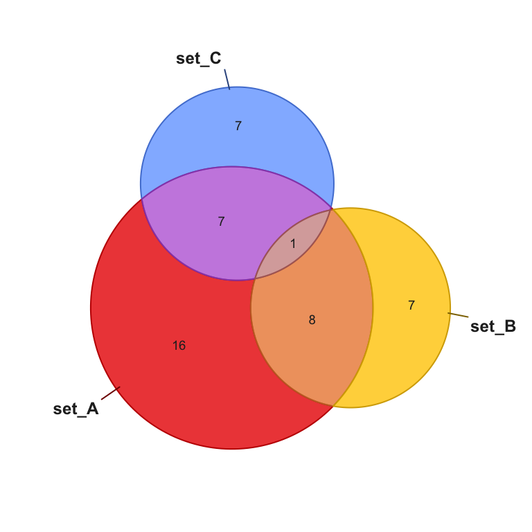
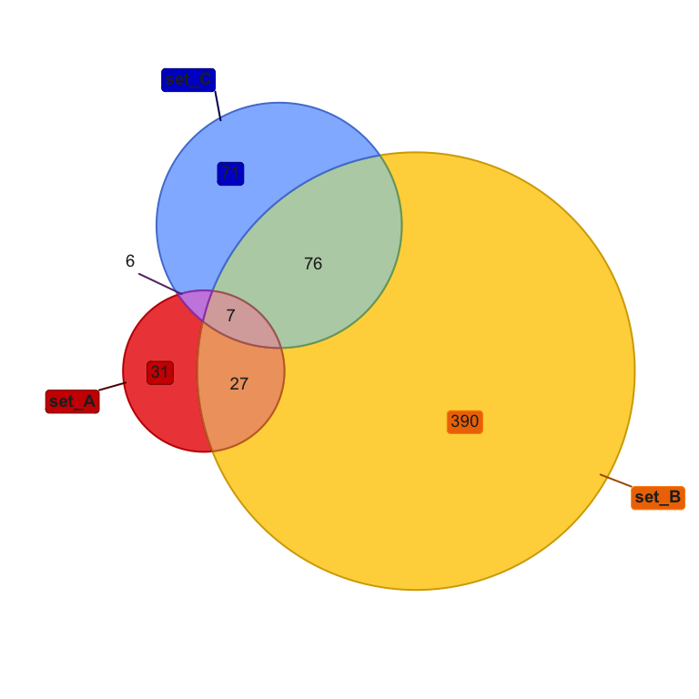
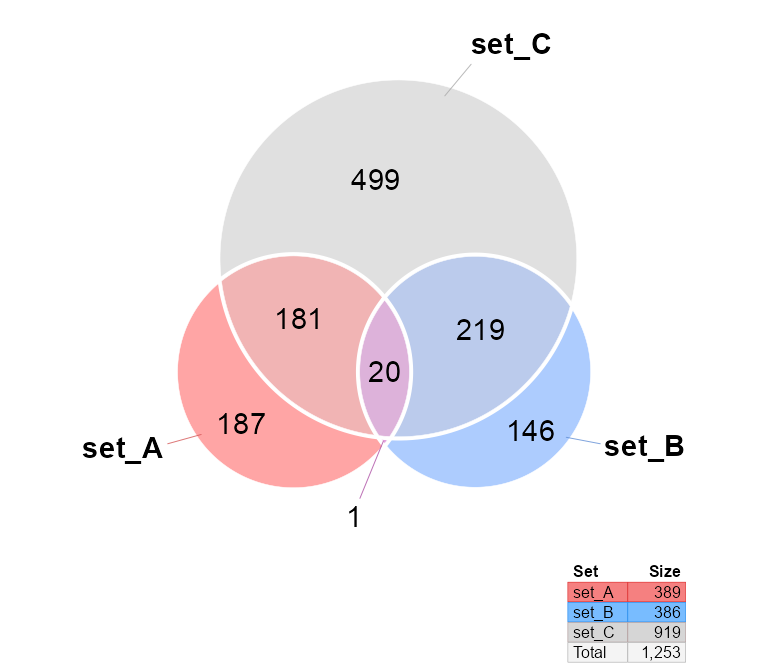

The goal of venndir is to enable directional Venn overlap analysis and visualization.
Installation
The development version of venndir can be installed with:
# install.packages("remotes") remotes::install_github("jmw86069/venndir");
Brief Overview of venndir
The venndir package includes a utility function make_venn_test() to create test data.
library(venndir) setlist <- make_venn_test(100, 3) venndir(setlist)

You can make a proportional Venn diagram, also known as a Euler diagram. More examples of proportional Venn diagrams are described below, with custom options to manipulate the position of circles and labels.
venndir(setlist, proportional=TRUE)

The default output is a base R plot, but you can use ggplot2 with argument plot_style="gg". The function returns the ggplot object which can be manipulated alongside other grid graphical objects.
venndir(setlist, plot_style="gg") #> ## (23:40:13) 18Nov2020: xlim:1.7,8.3, ylim:1.7,8.3

Venn Direction
For a more interesting case, make_venn_test() can make sets where the items have directionality, encoded with 1 for up, or -1 for down.
For biological data, direction is important and relevant. Whether a gene is regulated up or down might be the difference between disease and treatment.
Note
make_venn_tests()can simulate concordance, and the default isconcordance=0.5. Concordance is a measure of how frequently two directions are the same, and is defined(agree - disagree) / (n). Thus,concordance=0means there are the same number that agree as disagree in direction, andconcordance=1means every element agrees in direction.
There are a few ways to think about “concordance” – the measure of agreement in direction, and so there are few ways to display concordance inside a Venn diagram. The default argument overlap_type="concordance" displays the number up-up, and the number down-down, and everything else is considered “discordant”.
setlist <- make_venn_test(1000, 3, do_signed=TRUE) venndir(setlist)

This style is effective for 3 or more sets, where the number of possible discordant combinations may be too many to display comfortably. In this case it is still useful to see how many agree up, and how many agree down, the rest simply disagree.
Another option overlap_type="each" shows the count for every combination. As said before, it works best for 2 or 3 sets.
venndir(setlist, overlap_type="each")

The option overlap_type="agreement" shows only “agreement” and “mixed”, regardless of the direction. This option is especially good at summarizing the number that agree and disagree.
venndir(setlist, overlap_type="agreement")

The last option simply turns off the display of direction, overlap_type="overlap".
venndir(setlist, overlap_type="overlap")

Proportional Venn Direction
As shown above, you can switch output to a proportional Venn diagram, which uses the really nice eulerr R package.

Labeling is often a challenge with proportional Venn diagrams. By default, for directional Venn counts, if a polygon is less than 5% of the total area, the label is placed outside. For standard Venn counts the default threshold is 1%.
Below is the same diagram, showing only the overlap counts, and not the directional counts.

You can change the threshold for placing labels outside with the argument inside_percent_threshold, which takes integer percent values from 0 to 100.
venndir(setlist, proportional=TRUE, inside_percent_threshold=0.1, overlap_type="overlap", font_cex=c(1.3, 1))

Customizing the Venn diagram
The output of venndir() is a list with:
-
"venn_spdf"- which contains polygon coordinates stored as asp::SpatialPolygonsDataFrame. Essentially it stores each Venn polygon, with annotations in adata.frame. -
"label_df"- adata.framewith individual text labels, colors, and coordinates.
You can edit the label_df data manually, as needed, then render the Venn diagram using render_venndir(). (I really like having a function named render_venndir()…)
setlist <- make_venn_test(1000, 3, do_signed=FALSE) vo <- venndir(setlist, proportional=TRUE, do_plot=FALSE); print(head(vo$label_df)); #> x y text venn_counts overlap_set type x_offset #> set_A -8.7294794 -1.522097 31 31 set_A main 0.000000 #> set_B 8.8551704 -4.377014 390 390 set_B main 0.000000 #> set_C -4.6615851 9.950110 71 71 set_C main 0.000000 #> set_A&set_B -4.1398360 -2.239633 27 27 set_A&set_B main 0.000000 #> set_A&set_C -6.5909700 2.588698 6 6 set_A&set_C main -3.292144 #> set_B&set_C 0.1167125 4.733025 76 76 set_B&set_C main 0.000000 #> y_offset show_label vjust hjust halign rot color fontsize #> set_A 0.000000 NA 0.5 0.5 0.5 0 #D9D9D9FF 14 #> set_B 0.000000 NA 0.5 0.5 0.5 0 #262626FF 14 #> set_C 0.000000 NA 0.5 0.5 0.5 0 #D9D9D9FF 14 #> set_A&set_B 0.000000 NA 0.5 0.5 0.5 0 #262626FF 14 #> set_A&set_C 1.422392 NA 0.5 0.5 0.5 0 #262626FF 14 #> set_B&set_C 0.000000 NA 0.5 0.5 0.5 0 #262626FF 14 #> border lty lwd fill padding padding_unit r r_unit overlap_sign #> set_A NA 1 1 NA 4 pt 4 pt set_A|1 0 0 #> set_B NA 1 1 NA 4 pt 4 pt set_B|0 1 0 #> set_C NA 1 1 NA 4 pt 4 pt set_C|0 0 1 #> set_A&set_B NA 1 1 NA 4 pt 4 pt set_A&set_B|1 1 0 #> set_A&set_C NA 1 1 NA 4 pt 4 pt set_A&set_C|1 0 1 #> set_B&set_C NA 1 1 NA 4 pt 4 pt set_B&set_C|0 1 1 #> items overlap count show_items hjust_outside hjust_inside #> set_A item_052.... inside inside none 0.5 0.5 #> set_B item_011.... inside inside none 0.5 0.5 #> set_C item_059.... inside inside none 0.5 0.5 #> set_A&set_B item_019.... none inside none 0.5 0.5 #> set_A&set_C item_093.... none outside none 1.0 0.5 #> set_B&set_C item_060.... none inside none 0.5 0.5 #> vjust_outside vjust_inside #> set_A 0.5 1.0 #> set_B 0.5 1.0 #> set_C 0.5 1.0 #> set_A&set_B 0.5 0.5 #> set_A&set_C 0.0 0.5 #> set_B&set_C 0.5 0.5 vo$label_df[1:3,"border"] <- c("red4", "darkorange", "blue4"); vo$label_df[1:3,"fill"] <- c("red3", "darkorange2", "blue3"); render_venndir(vo);

A convenience function venndir_label_style() is provided which provides two features:
- It can adjust a label positions and visibility using
label_preset. - It can adjust label visual style using
label_style.
venndir_label_style() and label_preset
The label_preset has a few pre-configured options:
-
"main inside"- displays main set labels, and counts inside each polygon. -
"main outside"- displays each set label outside, and counts inside. -
"outside"- displays set labels and counts outside. -
"main items"- displays set names outside, and item labels inside each polygon. See below for examples.
vo4 <- venndir_label_style(vo, label_preset="main outside", inside_percent_threshold=0) render_venndir(vo4);

You can hide line segments with show_segments=FALSE.
vo4l <- venndir_label_style(vo, label_preset="main outside", inside_percent_threshold=0) render_venndir(vo4l, show_segments=FALSE);

venndir_label_style() and label_style
The label_style is used for visual effects, to improve visibility of the text labels. It applies two basic operations, fill and border.
Fill options:
-
"basic"- removes background fill -
"shaded"- partial transparent fill using the overlap color -
"fill"- fill using the overlap color -
"lite"- lite shaded fill -
"custom"- will not update the fill, in case you manually adjusted these values
Border options:
-
"box"- will draw a border around each label `""- absence of"box"inlabel_stylewill remove any border
The label_style string can be any string that contains those values, for example:
label_style="lite box"label_style="shaded"label_style="basic box"
vo3 <- venndir_label_style(vo, label_style="lite box") render_venndir(vo3);

Text Venn for the R Console
There is a text Venn diagram, surprisingly useful for quickly checking overlaps and direction. Note that the R console, and R help examples display colored text, just not in Rmarkdown.
The first example is the basic Venn overlap, without direction.
setlist <- make_venn_test(1000, 3, do_signed=TRUE) textvenn(setlist, overlap_type="overlap") #> set_A&set_B #> 27 #> set_A set_B #> 31 390 #> #> set_A&set_B&set_C #> 7 #> set_A&set_C set_B&set_C #> 6 76 #> #> #> set_C #> 71
But of course direction is helpful, so here it is with the default overlap_type="concordance" (below)
textvenn(setlist, overlap_type="concordance") #> set_A&set_B ↑↑: 9 #> 27 ↓↓: 12 #> set_A ↑: 19 X: 6 set_B ↑: 185 #> 31 ↓: 12 390 ↓: 205 #> #> set_A&set_B&set_C ↑↑↑: 2 #> 7 X: 5 #> set_A&set_C ↑↑: 2 set_B&set_C ↑↑: 39 #> 6 ↓↓: 3 76 ↓↓: 21 #> X: 1 X: 16 #> #> set_C ↑: 30 #> 71 ↓: 41
Not all consoles can display Unicode arrows, so you can use ASCII output only with unicode=FALSE:
textvenn(setlist, overlap_type="concordance", unicode=FALSE) #> set_A&set_B ^^: 9 #> 27 vv: 12 #> set_A ^: 19 X: 6 set_B ^: 185 #> 31 v: 12 390 v: 205 #> #> set_A&set_B&set_C ^^^: 2 #> 7 X: 5 #> set_A&set_C ^^: 2 set_B&set_C ^^: 39 #> 6 vv: 3 76 vv: 21 #> X: 1 X: 16 #> #> set_C ^: 30 #> 71 v: 41
Sorry, no proportional text Venn diagrams (yet)!
Nudge Venn circles
Another driving reason for this package is that sometimes proportional Venn (Euler) diagrams fail to produce circles that show all the overlaps. While sometimes it is mathematically impossible, other times are just… puzzling.
See below, the overlap set_A&set_B has 1 count, but is not displayed.
overlaps <- c(set_A=187, set_B=146, set_C=499, `set_A&set_B`=1, `set_A&set_C`=181, `set_B&set_C`=219, `set_A&set_B&set_C`=20); # convert to setlist setlist_o <- counts2setlist(overlaps) venndir(setlist_o, proportional=TRUE, font_cex=1.4, set_colors=c("firebrick2", "dodgerblue", "#9999AA"))

The argument circle_nudge lets you nudge (move) a Venn circle given x,y coordinates. Provide a list named by the set you want to move, with a numeric vector for the x,y coordinates direction.
vo_nudge <- venndir(setlist_o, font_cex=1.4, proportional=TRUE, circle_nudge=list(set_A=c(1, 0), set_B=c(-1, 0)), set_colors=c("firebrick2", "dodgerblue", "#9999AA"))

Item labels
An optional but useful feature is to include item labels inside the Venn diagram. It helps answer the question, “What are those shared items?” (In my experience, that’s a very early question.)
This step can also include the directional sign, which helps indicate which items are shared, and whether they have the same direction. In cases with too many labels to display, it is sometimes still useful to display the sign, as a visual cue for the proportion of shared or discordant signs.
Two arguments are required: the label_preset to define the visibility of items and main set labels; and show_items to define the type of item label. For example label_preset="main items" will display main set labels outside, and item labels inside; and show_items="item" will display the item label, show_items="sign item" will display the sign and item label, show_items="sign" will display only the sign.
setlist <- make_venn_test(100, 3, do_signed=TRUE); venndir(setlist, poly_alpha=0.3, label_preset="main items", show_items="sign item");

Interestingly, the density of labels gives some indication of the relative overlaps.
The same plot using proportional circles makes the label density effectively uniform:
setlist <- make_venn_test(100, 3, do_signed=TRUE); venndir(setlist, poly_alpha=0.3, label_preset="main items", show_items="item", proportional=TRUE);

With too many features to label, it’s still interesting to indicate the sign.
setlist <- make_venn_test(1000, 3, do_signed=TRUE); venndir(setlist, label_preset="main items", show_items="sign", show_segments=FALSE, max_items=10000);

Again, proportional Venn circles effectively makes the density uniform.
venndir(setlist, label_preset="main items", overlap_type="each", show_items="sign", max_items=10000, show_segments=FALSE, proportional=TRUE);